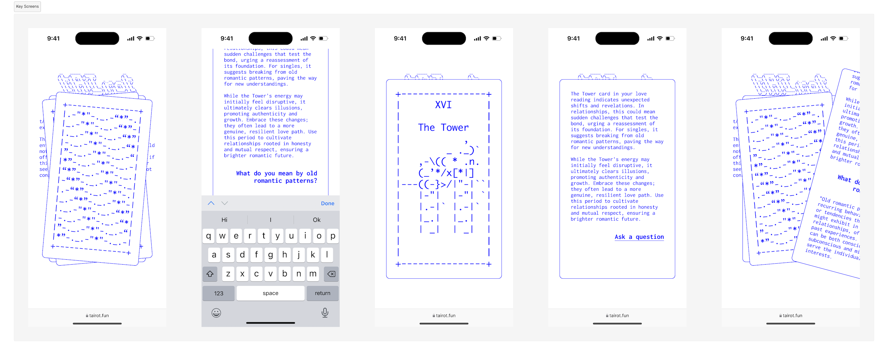

tAIrot is a virtual tarot card reading experience powered by AI. ASCII artwork featured on the tarot cards were done by Asya Davydova Lewis, and used with express permission from the artist.
This project was presented at the Conscious Festival 2023 in collaboration with the Deloitte Center for the Edge.
Concept
Virtual tarot card readings have been available in many various forms for some time now, such as online consultations, hard-coded card readings, and YouTube vlogs. The concept of a tarot card reading experienced powered by AI was first discussed as a possible collaboration that I ultimately decided to work on during my own time as a side project.

Research
While a familiar with divination and spiritual nuances, I was definitely more interested in exploring the technological aspect of incorporating artificial intelligence and the ancient art of tarot card reading. This was an exercise in crafting an experience that reshapes our understanding of the intricate dance between the tangible and intangible, the logical and mystical.
Some initial questions that the design process was framed around to get started were:
- Why are users interested in divination?
- What information are users expecting to receive in a reading?
- How are users hoping to feel after a reading?
These questions paved the way for helping me understand what emotions this virtual experience could evoke, and how the sequence of information and interactions presented could be structured.
Design Process
As someone who has never really gotten involved with the practice of tarot cards, it was important for me to understand and respect this interaction and exchange between a tarot reader and the client. In most basic forms of reading, a set of three cards will be used to form the outlook of a particular topic.
From my research, there are two main variables that affect it's meaning such as:
- Orientation of the card when pulled and revealed; upwards or reversed?
- Sequence of the card being pulled; is it the first, second or last card being revealed?
Also, it was common for the reader and client to ask follow up questions as each card is being revealed, to further understand the context of the query, or clarify a specific meaning.
Beyond recreating as faithfully and respectfully possible of a virtual experience, a new layer of interaction allows users to view readings done by previous users submitted to the Gallery. As the submissions are anonymous, it provides a unique voyeuristic circumstance of being able to look at what others have on their mind, creating a blind relational aesthetic connection towards other users.
Exhibition
The project was presented at the Conscious Festival in collaboration with the Deloitte Center for the Edge. Based on current usage, there have been more than 15,000 readings for users all around the world in various languages.
This web application is live and can be found here.
Throughout the festival, we’ve also polled the audience on how much they agree to the following statements after trying out the virtual experience:
- “I trust AI to predict my future” (1.8/5)
- “I have a different perception of AI” (2.7/5)
- “I think powerful AI tools should be widely accessible” (3.5/5)